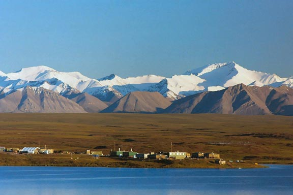

 The total length (mm) and otolith age of Slimy Sculpin (Cottus cognatus) captured in the Arctic Long-Term Ecological Research area were recorded in SculpinALTER.csv (view, download, meta).
Use these data to answer the following questions.
- Plot TL versus age. Observe the “shape” of the data (do the results look linear or like a von Bertalanffy growth curve, is there an obvious asymptote, are young fish well represented, how variable are lengths within ages).
- Fit the typical parameterization of the von Bertalanffy growth function (VBGF).
- Write the typical VBGF with parameters replaced by their estimated values.
- How realistic do the point estimates of \(L_{\infty}\), \(K\), and \(t_{0}\) seem?
- Construct 95% bootstrapped confidence intervals for each parameter. Comment on the widths of these confidence intervals. What explains this?
- Carefully interpret the meaning of each parameter.
- Predict the mean TL, with 95% confidence interval, for an age-3 Slimy Sculpin. Comment on the width of this confidence interval. What explains this?
- Predict the age at which the Slimy Sculpins will have reached half of the asymptotic mean TL.
- Plot TL versus age and superimpose the best-fit VBGF. Comment on model fit.
- Construct a residual plot. Comment on model fit.
- Compute the correlation between parameter values. Comment.
Continue with this data set here.
from Derek H. Ogle , created 01-Oct-15, updated 07-Nov-15, Comments/Suggestions.